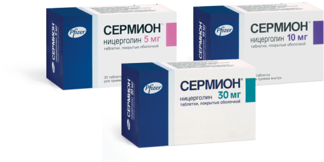

Пациенты, входящие в группы риска по развитию угрожающих жизни осложнений гриппа, требуют наиболее внимательного отношения
Грипп, как правило, протекает в легкой форме, но может приводить и к смертельному исходу20
В группы повышенного риска тяжелого
течения заболевания входят 20:
Люди в возрасте 65 лет и старше
Беременные женщины
Дети младшего возраста
Лица с ослабленным иммунитетом
лица с хронической патологией сердца, легких, почек, печени, крови, а также с нарушениями обмена веществ20

Начиная с первых проявлений ХИМ, Сермион®1,2,4-7:
уменьшает выраженность вазоспазма
улучшает микроциркуляцию в зонах ишемии
оптимизирует когнитивные функции